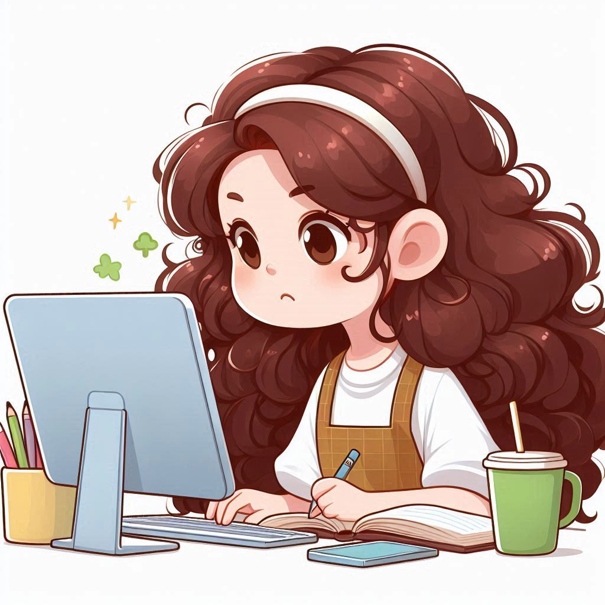
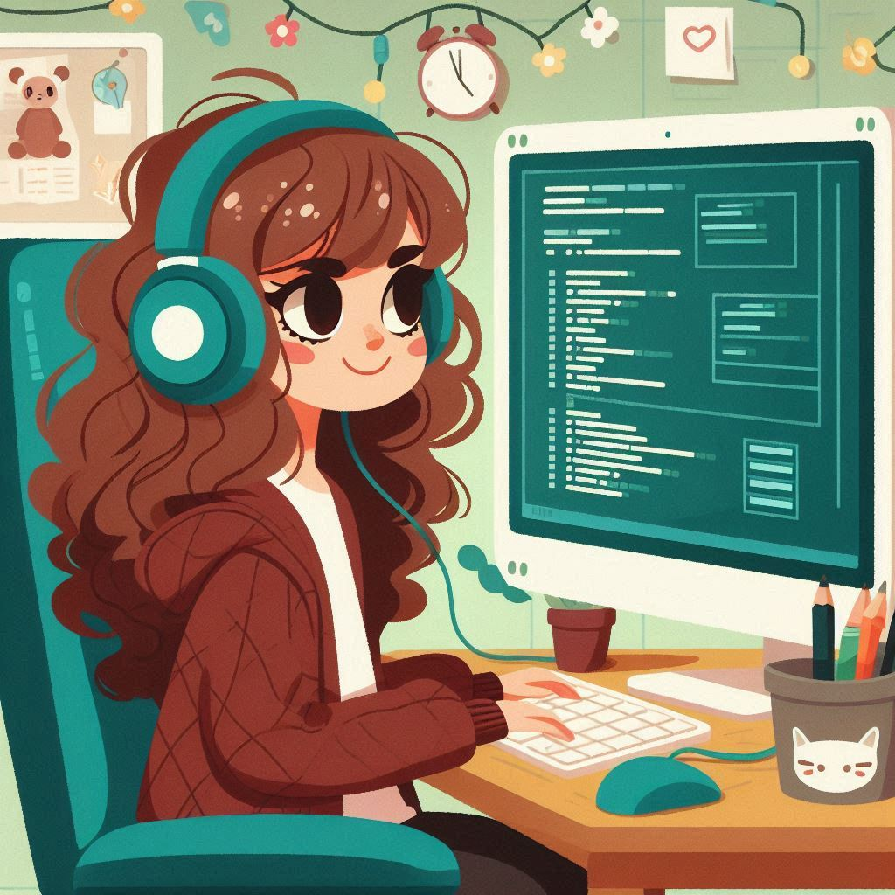

Así me enamoré de mi carrera
Cuando comencé a estudiar ingeniería en computación, no estaba segura de si era lo que realmente quería. Sentía dudas sobre mi capacidad para ser lo suficientemente buena y si este camino era para mí.
Me gradué del colegio con un técnico medio en desarrollo de software, una elección más por descarte que por verdadera convicción. No sabía qué carrera seguiría después, pero había escuchado que desarrollo de software era una opción útil como técnico medio, sin importar el rumbo que tomara en el futuro.
Siempre me sentí insegura durante los tres años que estudié la especialidad, y jamás logré destacar en ninguna de las áreas que se nos enseñaban. Las clases me resultaban confusas, y los exámenes se sentían como una tortura. Mientras algunos de mis compañeros avanzaban con facilidad, yo me veía levantando la mano a cada hora y haciendo preguntas que probablemente ya habían sido respondidas.
A medida que se acercaba la graduación, mi incertidumbre crecía. No tenía claro qué quería estudiar. Mientras mis compañeros tenían planes concretos, yo solo me repetía que podía estudiar algo relacionado con tecnología. Aunque no estaba segura de lo que realmente significaba, esa frase parecía la más apropiada y me daba una falsa seguridad sobre mi futuro. Al menos sentía que tenían algún plan para después de la graduación.
Los exámenes de admisión comenzaron, y decidí aplicar a varias universidades. Una de ellas fue el TEC, en el cual tuve una buena nota para ingresar. Cuando llegó el momento de elegir una carrera, ingeniería en computación fue mi primera opción casi de manera automática. Tal vez fue la familiaridad con el tema después de mis estudios de técnico medio, o quizás porque esa vaga idea de estudiar algo relacionado con tecnología había echado raíces en mi mente.
Aunque estaba un poco asustada de lo que podía pasar, había algo que se me daba bien y era seguir instrucciones. Pensé que tal vez si todo era como en el colegio, podía sobrellevar la carrera, porque después de todo a los ingenieros se les dice exactamente lo que tienen que hacer y cómo hacerlo, ¿no?
Mi entrada a la universidad
El primer año en la universidad fue muy difícil. Las clases iban demasiado rápido, y me frustraba que los proyectos no tuvieran un paso a paso detallado como en el colegio. No colapsé gracias a los vagos conocimientos que tenía de mi técnico medio, que me ayudaron a no sacar malas notas como las que probablemente hubiera obtenido de no tener un poco de conocimiento previo. Comencé a dudar de mi elección. ¿Realmente esto era lo que quería hacer?
 Recuerdo que aprendí lógica básica y lenguajes de programación amigables como Python y C#. Seguramente aprendí más que eso, pero sinceramente no lo recuerdo porque lo único que quería era salir con mis responsabilidades a como diera lugar y que llegasen las vacaciones, dado que estudiar se había vuelto una carga para mí.
Sin embargo, al llegar el segundo año, empecé a aceptar mi realidad. A pesar de pensar que había cometido un error, me di cuenta de que no quería cambiar de carrera porque no sabía ni siquiera qué era lo que quería estudiar, y no estaba dispuesta a tomarme un tiempo libre para reconsiderar mis opciones. Decidí que, si podía encontrar al menos un área en la que destacara, tal vez podría sentirme menos perdida.
Me adentré al mundo de bases de datos, conocí diferentes algoritmos de programación, nuevos lenguajes como Golang, Java, Prolog y F#. Incluso aprendí las complejidades de desarrollar un proyecto desde su planificación hasta desarrollo.
Empecé a notar un cambio en mí
Al aceptar mis circunstancias, comencé a esforzarme más, a investigar y explorar verdaderamente lo que se me estaba enseñando, esta vez con intención de aprender y descubrir esa área en la que me iba a poder desarrollar sin mucho conflicto.
 Descubrí que era curiosa y autodidacta, y poco a poco, me encontré disfrutando del proceso de aprendizaje. Ya no se trataba de seguir instrucciones al pie de la letra, sino de investigar, probar y descubrir soluciones por mi cuenta.
Cada nueva tecnología, cada concepto aprendido, era una pequeña victoria. Lo que antes me parecía imposible ahora se convertía en una oportunidad para mejorar. La programación, que alguna vez me había intimidado, se transformó en un espacio donde podía ser creativa y resolver problemas de maneras únicas. Me emocionaba aplicar lo aprendido en mis proyectos, me emocionaba combinar las diferentes herramientas y lenguajes de programación para desarrollar mis soluciones.
Hasta que finalmente me di cuenta de que no había una sola área en el que me podía desenvolver sin conflicto, sino que en cada una de las áreas podía hacerlo y no solo medianamente bien, sino muy bien. Podía ser tan buena como los demás y si me lo proponía, podía volverme mucho mejor. Y claro que me lo propuse.
Hoy en día, disfruto cada vez más de mi carrera. Sé que aún no soy la ingeniera que aspiro a ser, pero estoy en el camino correcto. Lo que más me motiva es saber que tengo la capacidad de crear, resolver e innovar. El futuro es incierto, pero ya no dudo de mi capacidad en volverme una gran ingeniera, y cada paso que doy me acerca más a esa meta.
La ingeniería en computación, aunque comenzó como un camino lleno de dudas, se ha convertido en la carrera que quiero seguir. Todo lo que he aprendido, y lo que aún me queda por descubrir, me tiene completamente fascinada. Finalmente, me enamoré de mi carrera.